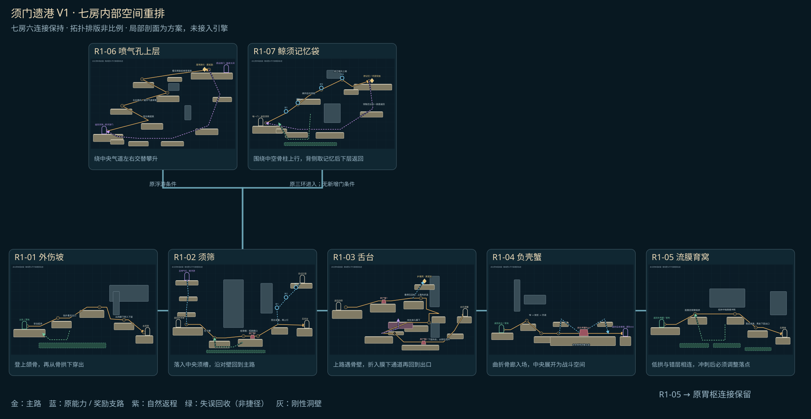

鲸腹遗城 / 须门遗港 / 2026.11.15 / REVIEW V1最新建筑补全：查看重点三房与后续十二房原画建筑、三槽状态和前后实机 ↗
肺心背景动态更新：查看心室观察台／血巢原画与8秒动态实机 ↗
把七房变成值得辨认的空间
沿用现有动作与战斗，用洞壁、错层、上下交叉、折返和局部回程改变走法。先审阅房内空间，再进入碰撞与美术制作。
7 房 / 6 条原连接原普通蟹 3 只 / Boss 1 场能力与奖励语义保持原审阅稿存档 · 已有本地接入
阅读方式：下方左侧为当前实机全景，右侧为本轮新布局剖面。剖面非比例，路线是行走顺序，不是弹道；标注、几何和颜色仅用于设计审阅，不代表正式场景美术或已经可玩。
七房关系与房内方向
总览仅表达原连接与七房内部结构，不表示鲸体解剖比例、实际场景尺寸或无缝地图。

主路能力 / 奖励支路自然返程失误回收 / 非可走捷径刚性洞壁 / 骨柱原膜形变包络
当前工程 · 2026-11-14 GPU 全景 提案 V1 · 可审阅剖面 / 非比例
提案 V1 · 可审阅剖面 / 非比例
顺着这条路看
- 01安全岸起步
- 02跃上低骨台
- 03登颌骨脊
- 04落入拱下
- 05抵达须筛
本房重点复核
- 开场两次跳跃都有宽落点；第一处失误可回到起步台。
- 高处不能直接跳到出口，拱脚和顶面形成清楚的下降口。
保留：原门 1 个 · 无新增奖励 · 营地保留 · 原敌人数 0
当前工程 · 2026-11-14 GPU 全景 提案 V1 · 可审阅剖面 / 非比例
提案 V1 · 可审阅剖面 / 非比例
顺着这条路看
- 01从左岸下槽
- 02低顶短跳
- 03宽台处理原尸蟹
- 04沿对壁回升
- 05进入舌台
本房重点复核
- 前三环仍是去记忆袋的路径，主路不要求提前取得浮游或冲刺。
- 低檐只约束中段跳高，不挡住落点和蟹的预告。
- 移除敌人后的主路仍有地形判断；原四门全部能往返。
保留：原门 4 个 · 无新增奖励 · 无新增营地 · 原敌人数 1
当前工程 · 2026-11-14 GPU 全景 提案 V1 · 可审阅剖面 / 非比例
提案 V1 · 可审阅剖面 / 非比例
顺着这条路看
- 01登上层舌脊
- 02前方骨壁迫使下行
- 03折返膜下
- 04下层向右穿过
- 05从侧孔回升
本房重点复核
- 折返隔层必须阻挡上层直落出口的绕过线，但不能封死返程。
- 原膜下潜深度与回弹高度另做配准，形变包络下方留空。
- 出口前回升分成可停顿的小段；图中的落差不直接作为施工坐标。
保留：原门 2 个 · 原奖励 · 无新增营地 · 原敌人数 2
当前工程 · 2026-11-14 GPU 全景 提案 V1 · 可审阅剖面 / 非比例
提案 V1 · 可审阅剖面 / 非比例
顺着这条路看
- 01营地出发
- 02沿骨廊转折
- 03进入开阔战场
- 04利用侧台换位
- 05击败后穿原门
本房重点复核
- 中央战场实际宽度至少保留现有约940px可用范围；剖面图非比例。
- 侧台不让Boss卡住，不新增坑、飞怪或额外封门。
保留：原门 2 个 · 无新增奖励 · 营地保留 · 原敌人数 1
当前工程 · 2026-11-14 GPU 全景 提案 V1 · 可审阅剖面 / 非比例
提案 V1 · 可审阅剖面 / 非比例
顺着这条路看
- 01起跳登高
- 02观察低拱
- 03横向冲刺穿过
- 04落台调整
- 05下层出口去胃枢
本房重点复核
- 冲刺路线必须有明显空间优势；同时带双跳和浮游检查是否整段跳过。
- 低拱两侧预留起跳和收招区，不用隐藏顶障卡角色。
- 软床沿用受伤并回到安全落点的语义，图中绿色线不是可走捷径。
保留：原门 2 个 · 无新增奖励 · 营地保留 · 原敌人数 0
当前工程 · 2026-11-14 GPU 全景 提案 V1 · 可审阅剖面 / 非比例
提案 V1 · 可审阅剖面 / 非比例
顺着这条路看
- 01左下入口
- 02右台落稳
- 03向左侧洞折返
- 04再向右上升
- 05取奖励并下落返回
本房重点复核
- 各次浮游均能先落稳再开始下一段，不新增上升气流能力。
- 奖励后自然下落路线有可见承接台，不依赖新开关。
- 先按同高度水平距离验证；图上左右跨度不代表引擎可直接照搬。
保留：原门 2 个 · 原奖励 · 无新增营地 · 原敌人数 0
当前工程 · 2026-11-14 GPU 全景 提案 V1 · 可审阅剖面 / 非比例
提案 V1 · 可审阅剖面 / 非比例
顺着这条路看
- 01第一组两环
- 02宽台停顿
- 03第二组两环绕柱
- 04背侧领取记忆
- 05沿下层回到原门
本房重点复核
- 不能用两次普通跳跃在同层直达奖励；同时检查二跳的高抛绕过。
- 四环每次都在现有搜索距离内，骨柱不能截断牵引目标线或夹住角色。
- 返程只沿既有动作和静态落点，不新增开闩或瞬移。
保留：原门 1 个 · 原奖励 · 无新增营地 · 原敌人数 0
审阅时只看这三件事
① 路线是否有辨识度
每房能否用一句话描述独特走法，尤其须筛的下槽上行、舌台的上下折返和记忆袋的绕柱。
② 去程与回程是否清楚
返程沿静态落点和既有动作，不引入新开关或解谜。绿色回收仅表达失误处理，不应变成贯通捷径。
③ 目标能否提前看见
奖励、出口和下一落点应被骨壁分隔却有视线提示；现有跟随镜头需在样板中复验。